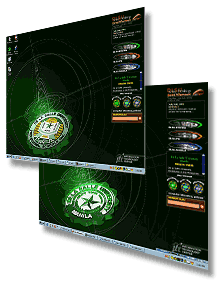

|
Documentation
Office : Updates
Active
Desktop and Wallpaper for DLSU Manila and PSI Computers
by:
Albert Gavino
The
active desktop developed by Lemuel Cabia boasts of Extensive
Markup Language (XML). This active desktop features a weekly
newsletter, a flash page that links to DLSU Manila, PSI, System
and Intranet. It also has icons linked to My.LaSalle, WISe
and Help Desk. Another link is for the Computer Laboratory
Policies. It also has a search engine at the bottom. The Active
Desktop comes with a Wallpaper both for PSI and Manila.
The
active desktop had been placed in the following labs (G302,
G306, G404, L229, L320, STRC314(MSCL), M306 & SJ212, V103,
V301, L212 and G304)including cybernook PCs in the library
since the first week of Oct. However, the labs with Win2K
OS which are not yet joined to a domain, many of the units
had been victimized by students who change the display settings
- one major reason why we need to implement the group policy
as soon as possible.
New
forms designed to support SMO and other offices
by: Albert Gavino
The
office facilitated the design of a form for the Health Services
and Dental system, a scannable form for the data entry of
the health and dental records of students and employees of
the University. The Freshman application which was formerly
posted on the web for downloading was converted to an online
form. This form will facilitate the data entry of freshman
applicants' data. Other online forms created were the CREM
registration forms, the MBA online feedback form and the Asean
University Network (AUN) feedback form..
Information
on Student Assistants and Volunteers now available
by:
Albert Gavino
We
have put information on student assistants and student volunteers
on the web to make Lasallian's life more challenging and well-rounded
on campus. Information are available for students who would
like to be Computer Lab Assistants, DO assistants, OCS and
Student Publications Office assistants.
Student
Volunteer information for offices like COSCA, LSPO, Cultural
Arts Office and Office of Student Activities are also available.
Newsletter
now available via email
by:
Albert Gavino
If
you've get hold of the DLSU Newsletter on paper, view it on
the web, view it on your Personal Digital Assistant or via
your active desktop, why not have it emailed to you. The eNewsletter
is now available. This newsletter is sent via e-mail on a
weekly basis and includes the headline news, faculty news,
announcements, updates and events. You may subscribe online
at the following address http://www.dlsu.edu.ph/offices/mco/publications/enews/sub_a.htm
|